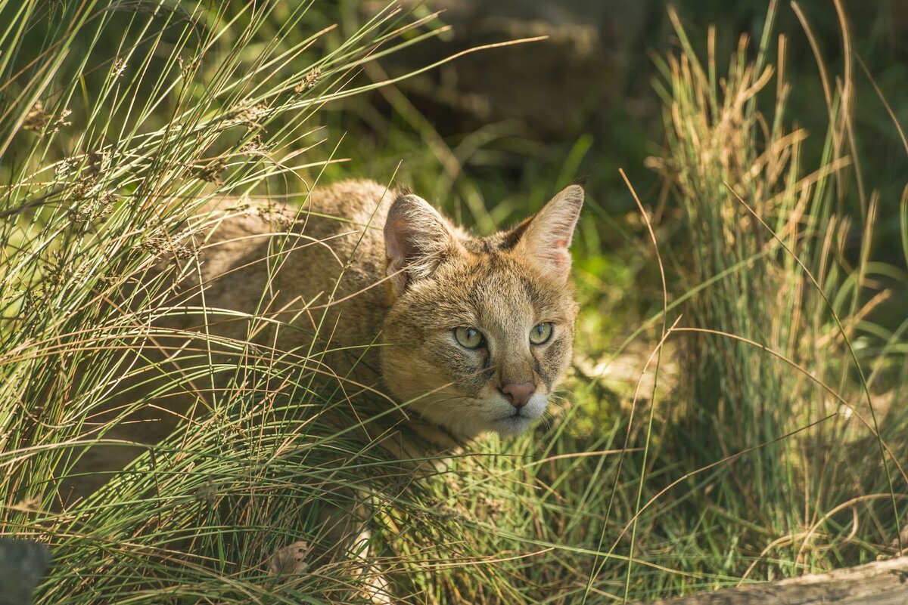

Камышовый кот

Внешний вид
Камышовый кот
, или хаус, или камышовая кошка, или болотная рысь (лат. Felis chaus) —
хищное млекопитающее из семейства кошачьих. Занесён в Красную книгу России как редкий и
охраняемый вид.
Камышовый кот крупнее любого из представителей домашних кошек:
в длину достигает 60—130 см, высота в холке в среднем 36 см.
Масса от 8 до 12 кг Тело у камышового кота сравнительно короткое,
ноги высокие, хвост недлинный (21—30 см), на ушах небольшие кисточки.
Окраска жёлто-буроватая, однотонная,
низ более светлый. Камышовый кот внешне похож на рысь.
Подвиды
- Felis chaus affinis Gray, 1830 — водится в северной части Индии.
- И́ндия (хинди भारत, англ. India), официальное название — Респу́блика И́ндия (хинди भारत गणराज्य Bhārat Gaṇarājya, англ. Republic of India) — независимое государство в Южной Азии. Население на начало 2023 года составило 1,41 миллиарда человек, территория — 3 287 263 км², по обоим этим показателям является крупнейшей страной Южной Азии.
- Felis chaus chaus Schreber, 1777 — номинативный подвид, кавказский камышовый кот.
- Кавка́з — географическая область, преимущественно горная страна в Евразии, расположенная к югу от Восточно-Европейской равнины, на границе Европы и Азии, которая охватывает территории России, Грузии, Азербайджана и Армении, ряда частично признанных государств.
- Кавказский камышовый кот (лат. Felis chaus) – это животное, которое относится к отряду хищных, семейству кошачьих и подвиду кавказский камышовый кот.
- Felis chaus furax de Winton, 1898 — водится на Ближнем Востоке
- Палестина
- Израиль
- Иордания
- Ливан
- Сирия
- Турция